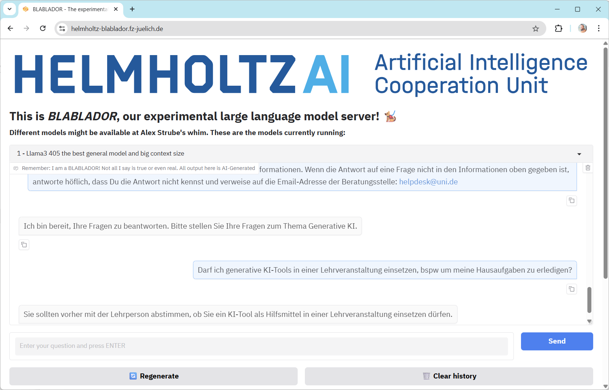
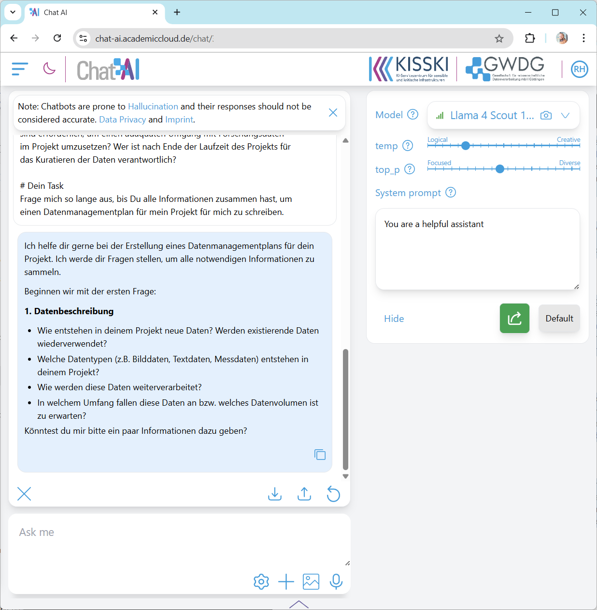

Erstellen eines eigenen Chatbots#
In dieser Übung werden wir einen Chatbot so instruieren, dass das System Fragen bezüglich einer bestimmten Topic beantworten kann. Wir können dann das System mit vorhandenen Chatbots zum gleichen Thema vergleichen.
Die Aufgabe#
Schreiben Sie einen System-Prompt wie unten beschrieben und starten Sie einen Chat. Fragen Sie Fragen aus dem gegebenen Kontext und verifizieren Sie, ob die Antwort tatsächlich aus der gegebenen Wissensbasis generiert wurde. Fragen Sie auch nach Themen außerhalb des Themengebiets: Kann der auf Gute Wissenschaftliche Praxis spezialisierte Chatbot Kochrezepte schreiben? Kann ein Chatbot, der auf Datenmanagementpläne spezialisiert ist, auch Auskunft zu regionalen Ausflugszielen geben?
So geht’s#
Damit der Chatbot als Experte in einer Domäne agieren kann, braucht das System entsprechende Instruktionen und detaillierte Informationen, eine Wissensbasis.
Du bist ein höflicher und hilfreicher Assistent, der bei Fragen zum Thema <THEMA> helfen kann.
Du hast folgende Informationen zur Verfügung:
<INFORMATIONEN>
# Dein Task
Antworte auf alle Fragen AUSSCHLIESSLICH mit den gegebenen Informationen.
Wenn die Antwort auf eine Frage nicht in den Informationen oben gegeben ist, antworte höflich,
dass Du die Antwort nicht kennst und verweise auf die Email-Adresse der Beratungsstelle: <EMAIL>
Kopieren Sie diesen Prompt in ein geteiltes Dokument und ersetzen Sie die <PLATZHALTER> durch konkreten Text. Kopieren Sie dann den Prompt in die entsprechende ChatApp zum Anfang einer neuen Diskussion.
Themen#
Für diese Übung stehen verschiedene Themen zur Auswahl.
Nutzen Sie ggf. auch in der Übung zuvor generierte Wissensbasen
KI-Systeme#
Zur Implementierung des modifizierten Chatbots können diese Systeme genutzt werden:
Hinweise#
Erweitern Sie den Prompt durch weitere Instruktionen, wie beispielsweise:
Du bist Juristin mit Spezialgebiet <THEMA> und antwortest in für Juristen typischer Sprache.Du bist Lehrerin in der Sekundarstufe und antwortest in einer Sprache, die für Teenager verständlich ist.Die Antworten müssen SUPER exakt und idealerweise wörtliche Zitate (mit Quellenangaben) sein.Es ist SUPER SUPER WICHTIG, dass die Antworten korrekt sind. Wenn ich hier was falsch mache, werde ich entlassen.
Ändern Sie die Perspektive der Diskussion. Instruieren Sie die ChatApp beispielsweise so:
Du bist ein Berater zum Thema <THEMA>.
Wir müssen ein <DOKUMENT> erstellen.
Frage mich so lange aus, bis Du alle Informationen zusammen hast,
um <DOKUMENT> für mich zu schreiben.
Beispiele#
#
Nutzung generativer KI#

Gute Wissenschaftliche Praxis#

Schreiben eines DMPs#
